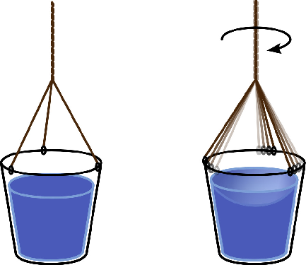

时间的形状：相对论史话
1 目录
2 时间线
| 16 世纪 | 伽利略（Galileo）提出惯性定律、相对性原理、伽利略变换式 |
|---|---|
| 1638 年 | 伽利略（Galileo）通过灯笼测量光速 |
| 1675 年 | 罗默（Ole Rømer）通过观测木星卫星证明光速的存在，计算出光速为 22.5 万公里/秒 |
| 1687 年 | 牛顿（Issac Newton）出版《自然哲学的数学原理》 |
| 1801 年 | 托马斯·杨（Thomas Young）进行「杨氏双缝干涉（double-slit experiment）」实验，证明光是一种波动 |
| 1851 年 | 菲索（Hippolyte Fizeau）通过旋转齿轮测量出光速为 31.5 万公里/秒 |
| 1873 年 | 麦克斯韦（James Maxwell）出版《论电和磁》，预言电磁场的存在 |
| 1887 年 | 赫兹（Heinrich Hertz）通过实验证明电磁波的存在，计算出电磁波的传播速度为光速 |
| 迈克尔逊（Albert Michelson）和莫雷（Edward Morley）通过「双缝干涉」实验未能证明以太的存在 | |
| 1904 年 | 洛伦兹（Hendrik Lorentz）提出「洛伦兹变换式」 |
| 1905 年 | 爱因斯坦（Albert Einstein）发表《论运动物体的电动力学》等五篇论文，提出「狭义相对论」 |
| 爱因斯坦根据「光电效应（photoelectric effect）」提出「光量子」假说，推动了量子力学的诞生 | |
| 1907 年 | 闵可夫斯基（Hermann Minkowski）提出「闵可夫斯基时空」理论 |
| 1909 年 | 希尔伯特（David Hilbert）提出「希尔伯特空间」理论 |
| 1915 年 | 爱因斯坦提出「广义相对论」 |
| 1916 年 | 史瓦西（Karl Schwarzschild）根据广义相对论推算出「史瓦西半径」公式 |
| 1919 年 | 艾丁顿（Arthur Eddington）通过日食实验证实广义相对论的预测 |
| 1922 年 | 哈勃（Edwin Hubble）发现首个银河系外的星系：仙女座星系（Andromeda Galaxy） |
| 1927 年 | 玻尔（Niels Bohr）和海森堡（Werner Heisenberg）提出量子力学的「哥本哈根解释（Copenhagen interpretation）」 |
| 海森堡提出「不确定性原理（uncertainty principle）」 | |
| 1929 年 | 哈勃根据遥远星系的红移现象提出「哈勃定律」，通过观测数据证明宇宙在加速膨胀 |
| 1935 年 | 爱因斯坦和罗森（Nathan Rosen）提出「爱因斯坦-罗森桥」理论 |
| 爱因斯坦、波多尔斯基（Boris Podolsky）和罗森提出「EPR 佯谬」，批评「哥本哈根解释」 | |
| 1964 年 | 彭齐亚斯（Arno Penzias）和威尔逊（Robert Wilson）发现「宇宙微波背景辐射（CMB）」，证明了「大爆炸」理论 |
| 1982 年 | 「EPR 实验」 |
3 前言
根据相对论，卫星上面的时钟会比地面上的时钟走得快，每天大约快 38 微秒。时钟的快慢并不是因为计时器精度不够造成的，而是因为时间本身真正的变慢了。如果不校正的话，那么 GPS 导航系统每天积累的误差将超过 10 公里。因此在 GPS 卫星发射前，要先把其时钟的走动频率调慢 100 亿分之 4.465，把 10.23 兆赫调为 10.22999999543 兆赫，这些数字全靠有了相对论才能那么精确地计算出来。
4 第一章
4.1 一
关于原子弹，爱因斯坦唯一做过的一件事情是在一封由西拉德起草写给美国总统罗斯福的信上签了字，这封信主要讲的是希特勒有可能正在研制一种威力巨大的「新型炸弹」，如果研制出来，很有可能改变二战的进程，美国也应该组织力量进行研制，以阻止可怕的灾难性后果。正如霍金指出的那样：把原子弹归咎于爱因斯坦的相对论，就如同把飞机失事的责任归咎于牛顿的万有引力定律一样。
4.2 二
科学哲学家波普尔阐明了一个被现在科学界广为接受的道理：所有的物理规律（或者说科学定律）都是永远无法被「证实」的。每抓到一只黑色的乌鸦，只能说给「天下乌鸦一般黑」这个理论增加了一分可信度，而一旦有一天我们发现了一只白色的乌鸦，这个理论就不攻自破了。科学理论之所以能称之为科学，首先它要能做出一些预言，而这些预言恰恰是要能够被「证伪」的。只有满足了「预言」和「证伪」这两个条件，才能冠以科学之名。当一个理论只能「证实」而不能「证伪」时，暂不能承认它是科学的，只能当做一种「见解」来对待。
「Entities should not be multiplied unnecessarily」，「如无必要，勿增实体」，这就是奥卡姆剃刀原理。童话《皇帝的新衣》中，总理大臣的解释：一、假设皇帝身上穿着一件世界上最华美的衣服。二、假设只有聪明人才能看见。三、假设我是蠢人。所以我看到的是光着屁股的皇帝。小孩的解释：一、假设皇帝根本没有穿衣服。所以我看到的是光着屁股的皇帝。根据奥卡姆剃刀原理，小孩的解释最有可能接近真相，因为他的假设最少。
奥卡姆剃刀原理还说明了另外一个道理：如果有某个条件是不能被我们感知和检测到的，那么和没有这个条件根本就是等价的。我们应当把所有一切不能被我们所感知和检测的条件都毫不留情地像剃刀刮肉一样从我们的理论中刮去。
5 第二章
5.1 一
伽利略的「惯性定律」是从一个思维实验开始的，伽利略设想把一个小球放到一个 U 型管的一端，让小球自由滑落，这根 U 型管表面越光滑，小球在另一端就能上升得越高，伽利略假想如果能发明一种完全没有阻力的材料，则小球应该能恰好在另一端到达跟起点同样的高度。他继续往下想：如果把 U 型管的另一端拉平，则小球从起点滑落后，为了能在终点达到和起点同样的高度，它只能不停地，永远地滚下去。
伽利略相对性原理：在任何惯性系中，力学规律保持不变。伽利略提出了几个数学公式，用来描述相对性原理，即伽利略变换式。伽利略变换式能够证明，对于同一个力学实验，不管在哪一个参考系中进行，所得到的规律是相同的。
在一个没有窗户的船舱里面，有没有办法知道船相对于岸是运动的还是静止的？只要做一点力学实验就可以了，比如用绳子挂一个小球，看绳子是不是完全垂直的；或者，把小球放在一张平稳的桌子上，看小球会不会自动滚起来。也就是说，如果船做的不是匀速直线运动，船上的力学实验的结果会被改变，即力学规律会被改变，比如惯性定律、自由落体定律等等。但是，如果假设船是在做完美的匀速直线运动，还能通过力学实验来知道船是否在运动吗？这种情况下，不论做的力学实验，都无法知道船相对于岸是静止的还是运动的。也就是说，在匀速直线运动状态下，所有的力学规律和在静止的状态时是完全一样的，即「静止」和「匀速直线运动」这两种状态的物理意义是相同的，或者说都是不精确的，伽利略用了一个新的词来统一它们所描述的状态，即「惯性系」。在岸上和在一艘匀速直线运动的船舱里面，都是在一个惯性系里。相对性原理说的就是：在任何惯性系中，力学规律保持不变。
5.2 二
如果把空间本身看做一个参考系，这个参考系就是一个「绝对空间」，所有物体在这个参考系中的运动速度就是它的「绝对速度」。

牛顿的水桶实验。水桶在刚刚开始旋转起来的时候，水体因为惯性，不会马上跟着转起来。但因为水的黏着力，最终水桶会带动着水一起开始旋转。如果在水桶之外进行观察，水的旋转速度是逐渐变快的，而如果以桶壁为参考系进行观察，水的旋转速度是逐渐变慢，最终相对于桶壁静止。
一个旋转的物体会产生向外的离心力（准确地说是向心力），这个离心力表现到一个呈圆柱形的水体中，就会使得水面中心向下凹陷。而水面的下陷在任何一个参考系中观察都是一致的，即水旋转的本质不因观察者所取的参考系而改变，这就是绝对空间存在的证明。
牛顿的绝对时空观被郑重地写入《自然哲学的数学原理》，其中所描述的定理可以精确地预测月食、日食发生的时间，精确到分秒不差，还能通过计算预言当时尚未被观测到的海王星的存在，当预言被证实的时候，牛顿的声誉达到了顶峰，再没有人怀疑神书中描述的任何事情。然而，在牛顿死后 100 多年，一系列的物理实验都得到了让人匪夷所思的结果，所有的实验被一再地重复，而结果都在无情地推翻着牛顿的绝对时空观，物理学遇到了前所未有的危机。